先来讲讲命令的基本格式。
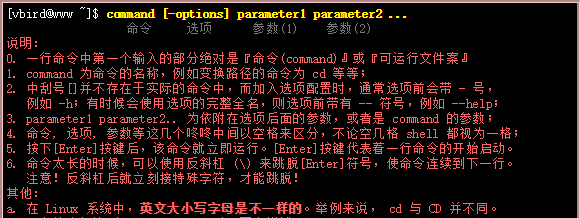
[]:中括号应该懂吧，c语言教材里面有说，是可有可无的意思。
然后来看看Linux的目录树结构。

然后是相对路径和绝对路径，绝对路径是指目录下的绝对位置，直接到达目标位置，在Linux必须以/开头。相对路径就是指由这个文件所在的路径引起的跟其它文件（或文件夹）的路径关系。如上图来看，假如我当前在dmtsai的目录下，我要打开mydata，我可以这样nano mydata，也可以nano /home/dmstai/mydata
cd(change directoty)
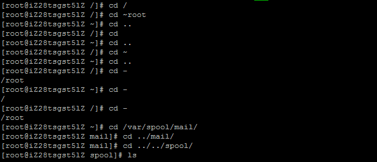
cd [相对路径或绝对路径]
cd ~lala:切换到lala的家目录
切换到家目录:cd/cd ~
切换到上一级目录:cd ..
回到之前的目录:cd -
绝对路径:cd /var/spool/mail
相对路径:cd ../mqueue
pwd(print working directory)，显示当前目录的完整路径，-P ：显示出确实的路径，而非使用连结(link)路径。
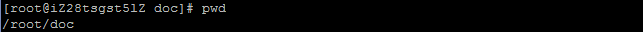
ls [-aAdfFhilnrRSt] 目录名称
ls [--color={never,auto,always}] 目录名称
ls [--full-time] 目录名称
选项与参数：
-a ：全部的文件，连同隐藏档( 开头为 . 的文件) 一起列出来(常用)
-A ：全部的文件，连同隐藏档，但不包括 . 与 .. 这两个目录
-d ：仅列出目录本身，而不是列出目录内的文件数据(常用)
-f ：直接列出结果，而不进行排序 (ls 默认会以档名排序)
-F ：根据文件、目录等信息，给予附加数据结构，例如：
*:代表可运行档； /:代表目录； =:代表 socket 文件； |:代表 FIFO 文件；
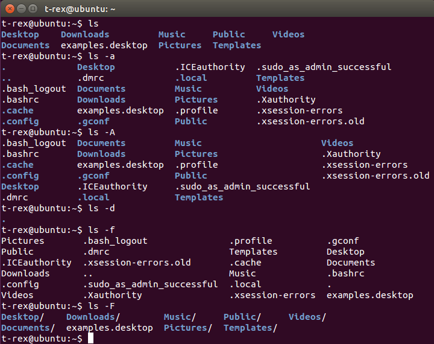
-l ：长数据串列出，包含文件的属性与权限等等数据；(常用)
-h ：将文件容量以人类较易读的方式(例如 GB, KB 等等)列出来；
-i ：列出 inode 号码
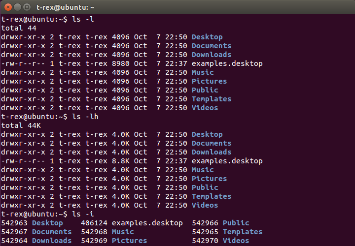
-n ：列出 UID 与 GID 而非使用者与群组的名称
-r ：将排序结果反向输出，例如：原本档名由小到大，反向则为由大到小
-R ：连同子目录内容一起列出来，等于该目录下的所有文件都会显示出来
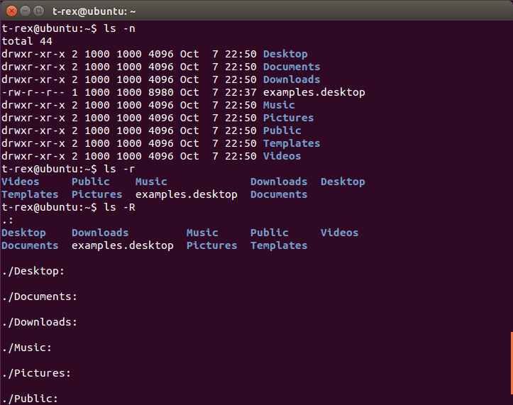
-S ：以文件容量大小排序，而不是用档名排序
-t ：依时间排序，而不是用档名
--color=never ：不要依据文件特性给予颜色显示
--color=always ：显示颜色
--color=auto ：让系统自行依据配置来判断是否给予颜色
--full-time ：以完整时间模式 (包含年、月、日、时、分) 输出
--time={atime,ctime} ：输出 access 时间或改变权限属性时间 (ctime)，而非内容变更时间 (modification time)
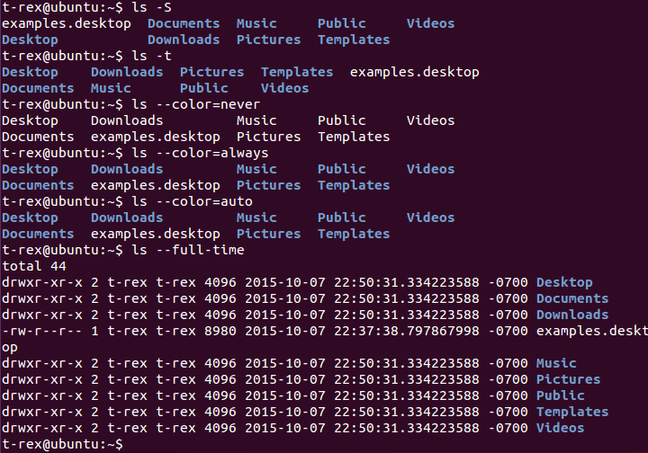
cp(copy)，复制文件或目录
cp [-adfilprsu] 来源档(source) 目标档(destination)
cp [options] source1 source2 source3 .... directory
选项与参数：
-a ：相当于-pdr的意思(常用)
-p ：连同文件的属性一起复制过去，而非使用默认属性(备份常用)
-d ：若来源档为连结档的属性(link file)，则复制连结档属性而非文件本身
-r ：复制目录(常用)
-f ：强制(force)，若目标文件已经存在且无法开启，则移除后再尝试一次
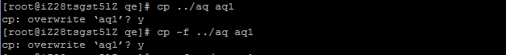
-i ：若目标档(destination)已经存在时，在覆盖时会先询问动作的进行(常用)
-l ：进行硬式连结(hard link)的连结档创建，而非复制文件本身
-s ：复制成为符号连结档(symbolic link)
-u ：若destination与source不同才进行复制
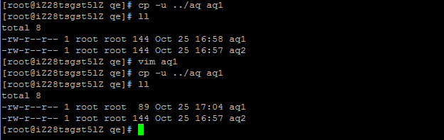
如果来源档有两个以上，则目的档一定要是目录。
rm(remove)，移除文件或目录
rm [-fir] 文件或目录
选项与参数：
-f ：force，强制
-i ：互动模式，在删除前会询问使用者是否动作
-r ：删除目录
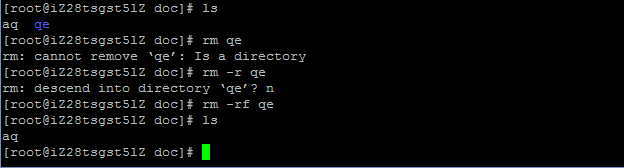
mv(move)
mv [-fiu] source destination
mv [options] source1 source2 source3 .... directory
选项与参数：
-f ：force 强制的意思，如果目标文件已经存在，不会询问而直接覆盖
-i ：若目标文件 (destination) 已经存在时，就会询问是否覆盖
-u ：若目标文件已经存在，且source比较新，才会升级(update)
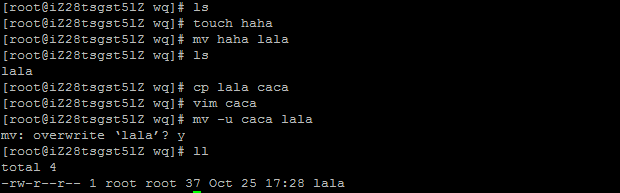
basename 路径:提取最后的档名
dirname 路径:提取前面的目录名
这两个命令主要用于之后的shell script的判断
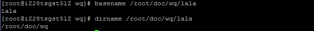
mkdir(make directory)
mkdir [-mp] 目录名称
选项与参数：
-m ：直接配置文件的权限
-p ：帮助你直接将所需要的目录(包含上一级目录)递回创建起来
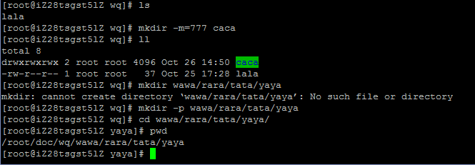
rmdir [-p] 目录名称
选项与参数：
-p ：连同上一级的空的目录删除
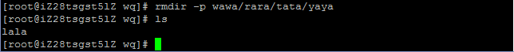